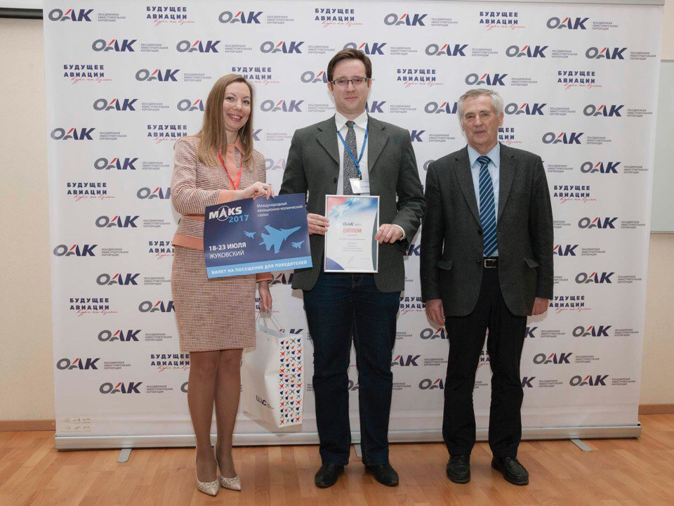
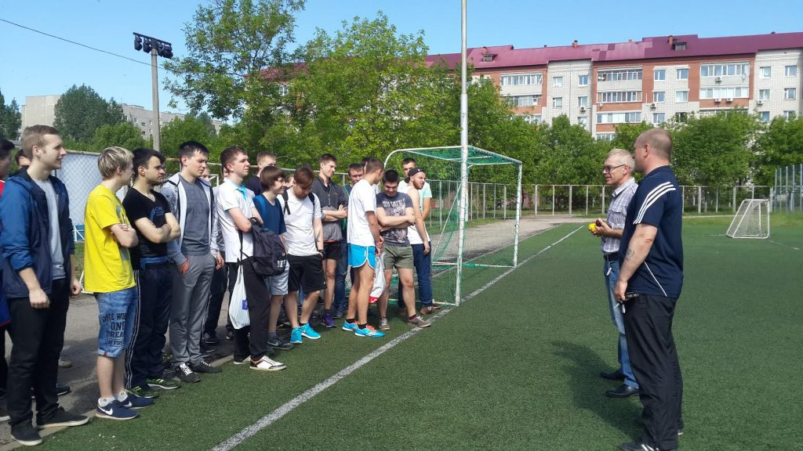

Будущее авиации
В ОАК подвели итоги третьего конкурса инженерных работ «Будущее авиации», организатором которого выступает Объединенная авиастроительная корпорация. Конкурс «Будущее авиации» проходил в период с апреля по июнь по пяти направлениям: «зеленый» самолет; «нетрадиционный» самолет; «форсайтный» самолет;
Будущее авиации
30 июня в актовом зале ИАТУ состоялось торжественное мероприятие, посвященное вручению дипломов выпускникам 2017 года. Наши выпускники получили свои долгожданные, заслуженные дипломы из рук директора Института авиационных технологий и управления Шишкина Вадима Викториновича

Будущее авиации
26 мая 2017 года на базе ФОК «ОРИОН», прошло спортивно оздоровительное мероприятие «День спорта» для студентов ИАТУ. Это было завершающим спортивным праздником в этом учебном году, а также, все желающие студенты имели возможность сдать Всероссийский физкультурно-спортивный комплекс «Готов к труду и обороне» (ГТО).